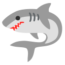

Manifesto#
The Scientific publication system#
» In a nutshell
The whole system is outdated and current technologies (see below) should drive us to do better.
» Scientists and the Cave
{kind=link}
My Alternative#
» Outline
Aim : Using 21st century tools to create and sustain a constructive scientific dialogue
The emergence of the internet unfolded new ways to share and discuss content of all sorts. We now have a rich ecocystem of Open source projects facilitated by the Licence creative common and yet, scientists are still relying on a 17th century old method to share their knowledge (scientific papers). The method evolved for centuries to become one of the most lucrative business as well as a technique enslaving scientists to the publication system (by the use of metrics and their importance in career advancement). This is perverting science. I think it is time to go forward in the way we share our research outputs and create a new system designed for our Open Science needs.
How : By empowering scientists with a single plateform embeding all the necessary tools and methodologies for Open Science
From all the tools mentioned on the right, the one you may be less familiar with is Jupyter Book. It is an open software, part of the Project Jupyter, that takes a collection of jupyter notebooks and markdown files, compile them to produce a static web-site. I think I can deliver a proof of concept version of a single web-plateform designed to help researcher retake possesion of their work. I see every piece of research like a furniture item, owing a web-site is like having a home within wich you can implement your furniture and design it according to your taste, and those of your guests.
To : Build, publish and share, beautiful publication-quality books and documents, from all your research outputs
Develop and maintain their research toolbox
Produce, store, edit and share all their scientific notes,
Publish all your Research Outputs
I think at this point it is best to show you an example: The web-site on the right is a Research compendium produced using Jupyter-Book. This book is part of the Science For the People project whose aim is to empower researcher to self-publish themselves in an open and innovative way, far from the unsustainable current publication system. This Book focus on my PhD project.
For : Providing an alternative to the current publication system
Target
Most usefull for PhD students (use from Start)
Adaptable to individual needs
multiscale
» Examples
My PhD
A difficult journey
The journey towards the completion of a PhD is long, hard and students are very often left alone to develop their skills in order to become an accomplished researcher. There is an incentive from graduate schools within Universities to help their student cohort but unfortunately (at least for me), this always translated into a set of administrative burden that are conterproductive. I think every student have their own needs and should be given the opportunity to developp their own set of tools to fulfill those needs. For me that that resulted in the web-site you are navigating into and that I will explain below:
A Thesis yes, but more outputs that extend far beyond
Thesis
Explain difference …
Notes
Explain difference …
School
Explain difference …
Benefits#
» Open Research Toolbox
Paragraph to explain in plain text the aformentioned benefits
I guess for me, if I had to pick only one, the best advantage is the ability to take notes informaticaly. I have never been consistent in taking hand written notes, and would often leave them uncomplitted, all over the place … a real nightmare.
Dialogue  -
- 
Alors certe, il y a probablement des outils plus efficaces et rapides sur le marche, mais j’aime faire l’apologie de la lenteur, d’autant plus qu’elle s’accompagne de nombreux benefices egalement …
Link with Semantic web cf Project Roadmap (Anchored)
» Editorial canvas
I have always been frustrated by the fact that I could never play with the edition aspect of every piece of science I have been writimg. All the time I had to obey to a certain template that I never found appealing to me. Owing my own web-site give me the opportunity to be an integrant part of the edition process as it clearly is an editorial sandbox.
For your Research ...
Write as you go along they said … It will be fun they said …
Markdown vs Latex or Word ?
One is relatively painfull and mostly serve the purpose of fitting within scientific journal edition templates. The other however, with the help of Jupyter Book gives you a serie of advantages shown below:
Benefits
Work is publishable as you go along (or not), and you can get feedback at every steps during your scientific journey, and that my friend is the best to learn and have a sain PhD journey.
Your are your own editor, you don’t have to obey any boring format. What we are doing as Researcher is great and exciting so ffs share it like that.
creativity
Choose your audience (multiple)
Overall,
More than just a template
Readibility
Readability is the search for factors in reading material which could be easily and objectively counted.Positivist paradigm stated that reading difficulties is influenced by four factors, content, stylistic elements, format and organisation. Among these elements, factors such as vocabulary load, sentence structure, idea density and human interest appeared to be significantly related to reading difficulty. Cognitive science (date) bring a new perspective which emphasized the interactive nature of reading and the constructive nature of comprehension. Comprehension is related to the cognitive process of searching for meaning, that is no longer viewed as coming from the text, but, rather, from the readers mind in interaction with the text.
Because of its collaborative nature, and the ability to collect readers experience, I think this web-site can be a great research plateform to investigate readability, accrose the full spectrum of audiences.
High readibility (process of matching the reader and the text) by allowing the readers () to navigate
More
Note
Use that vocabulary to generate specific tags for the research produced
... And all the other things orbiting around it!
Teaching material
Editorial experiments of teaching material:
This is a brief attempt to explain how Education works.
The body of the tree represent the education system. The trunk being the common set of knowledge that we are given in highschool (which is mandatory for all, as far as I know). The branches represent the University, and at that point the system diverge into different discipline, at bachelor level and subsequently when you get to do a Master. The leafs actually represent Researches that creates new knowledge
Interdisciplanary Science
The orange leaf is my friend Ross, he is also studying the earliest stages of planet formation but he is a geologist (poor him I know)
Examples:

Fig. 6 Education image#
Presentations / Posters
Recycle your talks !
Put them online and give them a quick twist to fit a wider audience.
» Publication plateform
Publication are rattached to your own profile rather than belonging to a journal
Free (no paywall)
Example
The Future
Lifelong Peer Review
Open for Collaboration
What I would like to explore is how we can bring researchers (from various disciplines) to work together on a given problematic, rather than competing with each other. I think that such a plateform can help in promoting this collaborative approach.
promote collaboration rather than competition
L’entraide pour rendre accessible du contenue educatif de pointe, de qualite et accessible a tous!
L’emploie du ton familier (universel).
You will have to put some efforts to make it work, but you will build a tool that can follow you during your whole career.
I think it is worth a try (link to jupyter-book tuto)
» Communication

Note
reproduce with science communication methods
Create a dialogue
The most beatifull part of having your work hosted in the internet is that people (all people, cf below) can interact with it and comment, ask questions …
ton de la conversation
Bienveillance
Dont la finalite n’est pa de generer de l’argent mais bien de creer le dialogue. Quand bien meme des possibilites de soutien financiere sont possibles.
For All Audiences
I aim to deliver content for everybody interested in Science, so let me know who you are and I will point you in the right direction.

Legend
 Anyone
Anyone
 Friends/Colleagues
Friends/Colleagues
 Teachers
Teachers
 Researchers (other fields)
Researchers (other fields)
 Researchers (my field)
Supervision team
To have access to Science
Note
Create svg diagram of scale (different level), and fish at every scale with lift to help them climb.
» Sociale & politique
agonistic publishing
dissociative and associative agonism
Benefits
More impact on Society
Enseignement
Créer une société de chercheurs indépendants
délivré de la bureaucratie qui gangrène le milieu accadémique, mais également du monopole des sociétés de publication.
I am imagining a world where researchers would be free to publish their work in their own terms, far from the current commercial scientific publication system. The internet as provided the emergence of countless open and free softwares (cf margin) that are now making this world a reality. This website is an experiment to show an exemple and highlighting all the benefits given by adopting this approach, there is a few
» Benefits for ...
You, researchers
Break free from commercial scientific publication by creating your own accademic profile. You will get a lifelong publication plateform that is self maintained and hence, owned by you. It can welcome all your scientific outputs:
Articles
Data
Code
Notes
Method
Presentations
Teaching
…
Stored, versioned, citable (via DOI) and embebeded into a prebuild web-site wich gives you the abillity to link all this content together. This promote an open, transparent and lifelong peer review process with a content that can be adapted to fit multiple audiences.
The scientific community
This website provide a hub for scientists of all fields, interested in the same research question to provide their inputs. Powerfull tool to promote colaboration between interdisciplinary researcher. I think all together we can write science collaboratively, in an Encyclopaedia 2.0 . How ? On this web-site you can:
Review: Wether you are a peer, a student or everything in between, you can comment and review this work using
hypothesis(the three buttons on the right hand corner).
Comment: More general comment at the bottom of the page
Contribute: Writing articles within the existing content (work in progress)
Participate and create your own profile
Peoples
Access to cutting edge science
New education method
Et vous aussi les potes! -
Desole, la majorite du contenu est en anglais, accessibilite exige! Cependant, je pense a vous, et si vous avez la curiosite de vous lancer dans une exploration de ce site, je suis pret a vous accompagner. Suivez ces admonitions et tout devrai bien se passer.
Comments#
Notes
To Do
Lots to do here
Work it progressively and create a specific admonition for the part that is currently undergoing work
create new sftp logo that match the length of OU logo - implement on all example
Check about coherent plan and make it clear!!
Ideas
Make the aquiarium svg moving
Page
Status:

Reviewed: ❌
Updated: 15/02/2023